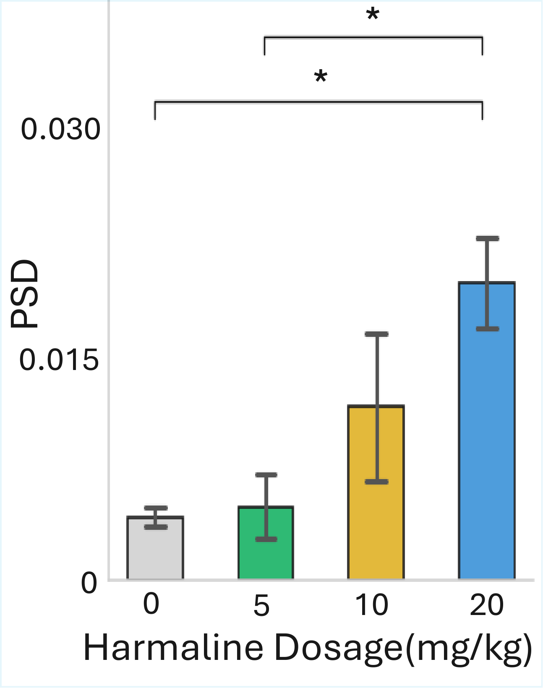
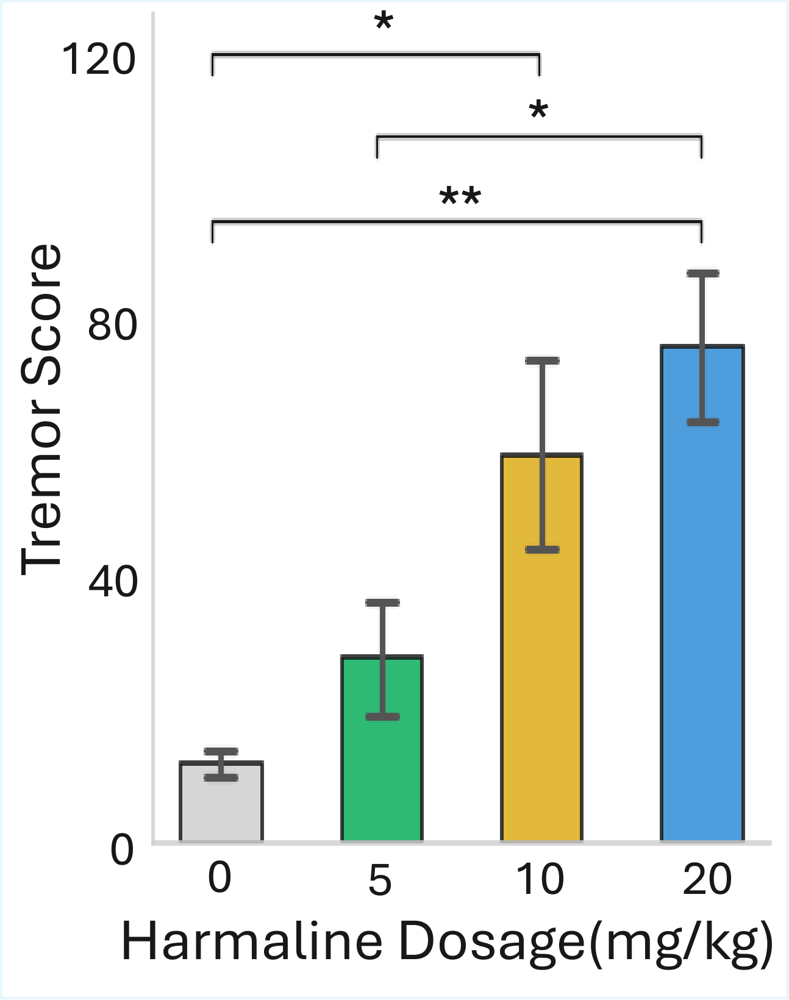

Dual side-view RGB videos are converted into pose trajectories, filtered for reliable stationary segments, and summarized as a prominence-based tremor score.
Abstract
Tremor is a movement disorder characterized by involuntary, rhythmic oscillations of body parts and is a hallmark of several neurological conditions, including Parkinson's disease and essential tremor. Existing quantitative methods for mouse tremor analysis often require invasive devices, costly equipment, or subjective human scoring.
This work estimates mouse tremor severity using only conventional RGB cameras. The pipeline incorporates segmentation-based preprocessing, animal pose tracking, multi-view selection, movement filtering, and prominence-based vertical head-displacement analysis to capture subtle tremors in unrestrained mice. Experiments show strong agreement with accelerometer measurements and recover dose-dependent tremor characteristics under harmaline administration.
Method
1. Multi-view Selection
Paired front and back side-view videos are segmented and tracked. For each 3-second temporal segment, the view with higher pose confidence is selected to reduce self-occlusion failures.
2. Move Detection
Cumulative head displacement is used to exclude locomotion-dominated segments, preventing voluntary movement from being counted as pathological tremor.
3. Tremor Score
Vertical head oscillations in stationary segments are quantified by counting peaks whose prominence exceeds a threshold, producing a global tremor score.
Key Results
0.86
Correlation with accelerometer PSD ground truth
56
RGB video sequences collected from 28 wild-type mice
≥ 0.80
Correlation across all tested movement and prominence thresholds
The proposed method outperformed a velocity-based RGB baseline and matched expert manual scoring while avoiding frame-by-frame human evaluation. Ablations confirmed that segmentation, movement filtering, and multi-view selection each contribute to robust tremor estimation.


Supplementary Video
Examples of tremor severity and a visual comparison between the proposed score and accelerometer measurements.
Code
The public implementation computes tremor scores from paired front/back DeepLabCut tracking outputs. It includes the DLC-output-to-score stage, example CSV inputs, configuration files, and optional PSD correlation evaluation utilities.
bash scripts/run_example.shCitation
Citation information will be added after publication.